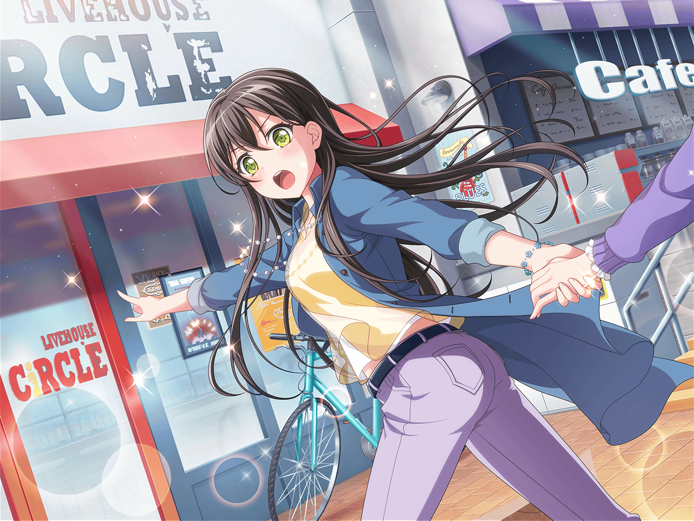

CiRCLE カフェテリア
香澄
バラバラになっちゃったみんなをまとめるために、
私達がやらないといけないことは……
たえ
とにかくもう一度、みんなを集めること、だよね
たえ
それじゃあ、香澄。
強制連行部隊、ふた手に分かれて出発だね
香澄
おたえ！
ライブを成功させるためにも、絶対にみんなを連れてこようね！
たえ
うん。
みんなが来ないと意味ないもんね
有咲
ちょ、ちょっと待った！
香澄、おたえ！
香澄
あ！ 有咲！
有咲も一緒に行こうよ！ みんなを強制連行しに！
有咲
つーかその言葉、人聞き悪いからあんまり大声で言うなって！
有咲
ていうか、香澄達がやろうとしてるのって、
結局、他のバンドのメンバーを無理やりここに
連れてくるってことだろ？
有咲
ホント、それでうまくいくのか？
香澄
うまくいくかはわからないけど、
私達にできることって、今はそれしかないと思う
香澄
とにかく、みんなで集まって、
もう１回各バンドの演奏を聴いてみようよ。
そしたら、絶対にいい考えが浮かぶはずだよ！
たえ
私もそう思う！
有咲
う～ん、言ってることはわかるけど……
ただ、そんな無理やり連れてくるようなことしたら
ケンカにならないか？
有咲
これ以上話がこじれちゃったら、
絶対に『ガールズバンドパーティ』は開催できねーぞ
香澄
大丈夫だって！
無理やり連れてくるって言ったって、
別に手荒なマネなんかするつもりないし
たえ
あ、そうだ、有咲。
あれって、どこに売ってるかな……？
あの、銀行強盗とかする時に被る、マスクみたいなやつ
有咲
ひょっとして、目出し帽！？
手荒なマネする気満々かっ！？
たえ
強制連行するなら、必要かなって思って
香澄
それは、ナシの方向で！
有咲
マジで心配なんだよな～。
うまくいく気が全然しないんだけど……
たえ
有咲は、いろんなこと考え過ぎ。
私は、考えないことも大事だと思うよ
有咲
はぁ？
考えないことも大事って意味わかんねーけど
たえ
私、好きな音楽を聴いた時、自然と身体が動いちゃうよ。
これはいい音楽だから身体を動かそう、とか考えたことない
たえ
難しいことを考えないで、身体や心が感じたまま答えを出せば、
きっといい答えに近づけると思う
香澄
そう、それ！
私もそれが言いたかったの～！
有咲
つーか、みんながみんな香澄やおたえみたいな人だったら、
そうかもしれねーけど、大半はそうじゃねーからな
たえ
だけど、みんなが音楽が好きでバンドを
やってる、ってことは同じだよ
香澄
今はとにかく！
みんなをCiRCLEに集めなきゃだよね！
たえ
あとはみんなの身体や心が、出してくれる答えに期待しようよ
有咲
おたえはマジで、たまにいいこと言うよな……
たえ
だから有咲も一緒に行こう
有咲
ま、確かに香澄とおたえ２人だけじゃ、かなり心配だし……
特におたえは何言ってるか理解不能だったりするからな……
有咲
それじゃあ、私はおたえについてくとするか
香澄
わ！ ホントに！？
有咲、ありがとー！ よかったね、おたえ！
たえ
ありがとう、有咲。
今度、オッちゃんのお腹、モフモフさせてあげるね！
有咲
そのありがたさが、全然わからない……っ！
香澄
とにかく今の私達に必要なのは、情熱だよ！
熱い情熱で、みんなをCiRCLEに連れてこようね！
有咲
ふふ。
単純だけど、ウチラらしいやり方なのかもな。
『必要なのは情熱』なんて、香澄じゃなきゃ言えねーし
香澄
それじゃあ、強制連行部隊、しゅっぱーーーつ！
たえ
あ！ 香澄ちょっと待って！
香澄
え？ どうしたのおたえ？
たえ
他にも必要なものあったよ
有咲
はぁ？ なんだそれ？
たえ
目出し帽！
有咲
だからそれは、ぜってーいらねーだろ！